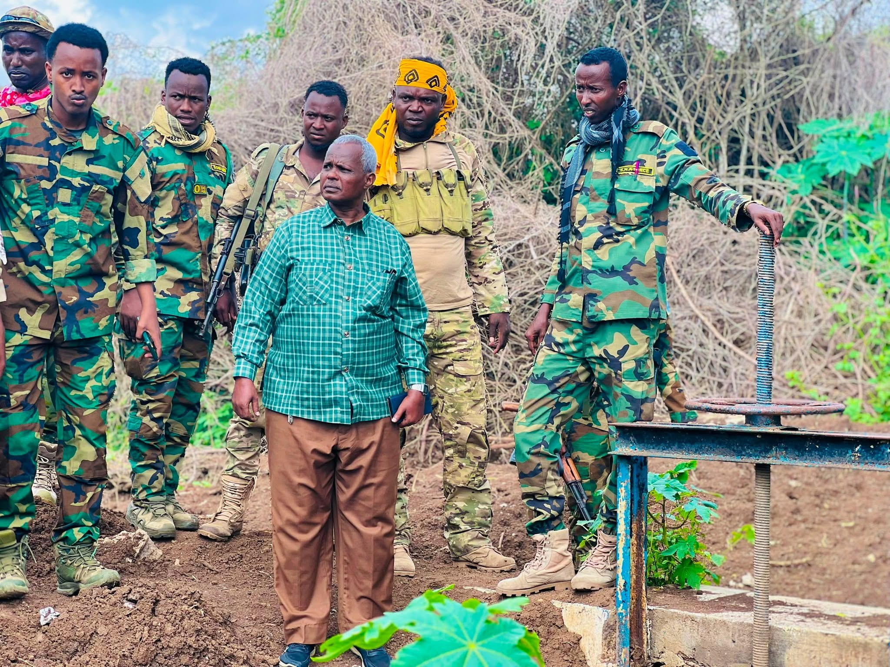
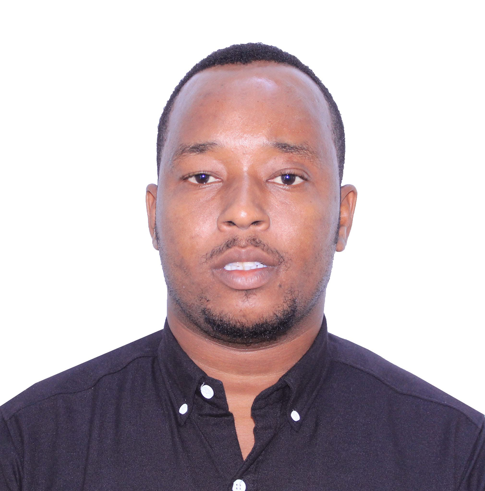

Shabeellada Hoose TV
Ku soo dhawoow bogga rasmi ah. Wararka iyo xogaha dhowaa kala soco halkan iyo baraha bulshada.
Xaqiijin: Maamulka Degmada Marka oo ka hadlay wararka sheegaya in Gudoomiyaha uu iscasilay

Xiriir aan la sameynay maamulka degmada Marka ayaa noo suurtagashay inaan khadka taleefanka kula hadalno Gudoomiye ku-xigeenka Qorsheynta iyo Dib-u-dhiska Degmada Marka, Mudane Salim Hassan Buralle Warfaa.
Waxaan gudoomiyaha ka wareysanay arrimaha is-casilaada gudoomiyaha Degmada Marka, Mudane Cadaani Axmed Diiqoow, oo saacado kahor la baahiyay inuu xilka gudoomiyaha degmada Marka uu iska casilay.
Gudoomiye Warfaa ayaa inoo xaqiijiyay in arrintaasi ay tahay mid wax kama jiraan ah, isla markaana uu gudoomiyaha si buuxda waajibaadkiisa shaqo u gudanayo.
https://shabeellada-hoose-tv.vercel.app/#profile-salim-hassan-buralle
Ambassador Jamal Mohamed Barrow - Taariikh Nololeedka

Ambassador Jamal Mohamed Barrow waa diblomaasi iyo mas'uul qaran oo Soomaaliyeed, kaas oo ka soo jeeda deegaanka Galweyn ee gobolka Shabeellada Hoose, kana soo noqday jagooyin muhiim ah oo diblomaasiyadeed iyo heer qaran ah.
1. Asalka iyo Bilowgii
Jamal Mohamed Barrow wuxuu ku dhashay kuna koray deegaanka Galweyn ee gobolka Shabeellada Hoose. Wuxuu aqoon u yeeshay horumarinta bulshada iyo arrimaha dibadda.
2. Waaya-aragnimada Shaqo iyo Diblomaasiyadeed
- Wasaaradda Arrimaha Dibadda: Wuxuu soo noqday Wasiir Ku-xigeenka Arrimaha Dibadda ee Dowladda Federaalka Soomaaliya (2012–2013).
- Matalaadda Qaran: Wuxuu soo noqday Safiirkii Soomaaliya u fadhiyay dalka Nigeria, halkaas oo uu dib u furay safaaradda dowladda, sidoo kalena wuxuu safiir ka soo noqday dalka Koonfur Afrika.
- Dhismaha Nabadda: Wuxuu hormuud u ahaa xoojinta xiriirka caalamiga ah iyo horumarinta diblomaasiyadda dalka.
3. Doorka Hadda
Waqtiga xaadirka ah, wuxuu si weyn ugu lug leeyahay talo-bixinta siyaasadda dibadda iyo dhiirrigelinta adeegga bulshada.
Saalim Xasan Buralle Cali (Warfaa) - Taariikh Nololeedka
Saalim Xasan Buralle Cali (oo loo yaqaano Warfaa) waa aqoonyahan, siyaasi, iyo hawlwadeen bulsho oo ka soo jeeda Soomaaliya, kana dhex muuqda adeegyada bulshada iyo maamulka deegaanka.
1. Dhalashada iyo Asalka
Wax uu ku dhashay taariikhdu markay ahayd 1-dii Ogosto 1993, deegaanka Galweyn ee ka tirsan gobolka Shabeellada Hoose.
2. Waxbarashada
- Dugsiga Hoose/Dhexe: Galweyn Primary School (2009).
- Dugsiga Sare: Abukar Alsadiq ee Marka (2013).
- Shahaadada Koowaad (Bachelor): Maamulka Dadweynaha (Public Administration) oo uu ka qaatay Daarul Salaam University (2017).
- Shahaadada Labaad (Master): Xallinta Khilaafaadka (Conflict Resolution) oo uu ka qaatay Jaamacadda Stanford (2020).
- Shahaadada Labaad ee Kowaad: Maareynta Khayraadka Aadanaha (Human Resource Management) oo uu ka qaatay Barawa International University (2024).
- Waxbarashada Sare ee Hadda: Sannadka 2026 wuxuu ku jiraa barashada Shahaadada Master-ka ee Xiriirka Caalamiga ah (International Relations) ee Barawa International University.
3. Waaya-aragnimada Shaqo iyo Hoggaamineed
- Maamulka Degmada: Sannadkii 2019 waxaa loo magacaabay Gudoomiye Ku-xigeenka Koowaad ee Qorsheynta iyo Dib-u-dhiska Degmada Marka.
- Ururada Bulshada: Waa Aasaasaha ahna Gudoomiyaha Ururka Samafalka ee WCA – WARFAA Charity Association, oo xarunteedu tahay Nairobi.
- Waxbarashada iyo Tababarka: Waa Aasaasaha ahna Gudoomiyaha WARFAA ACADEMY oo fadhigeedu tahay Nairobi, halkaas oo lagu barto xirfadaha tiknoolajiyadda, luqadaha, iyo farsamooyinka warbaahinta.